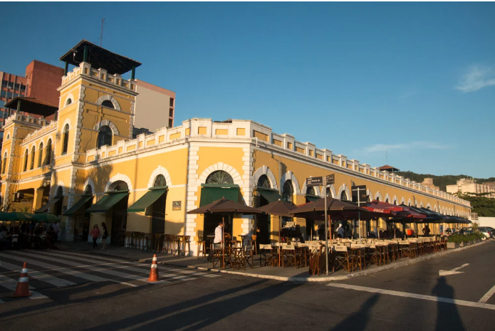
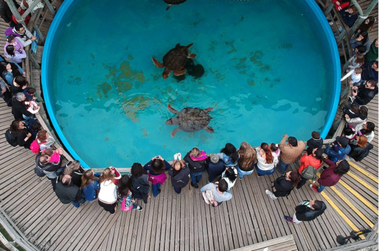
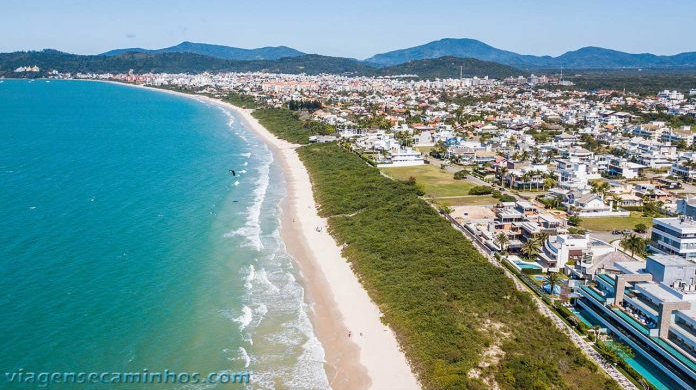
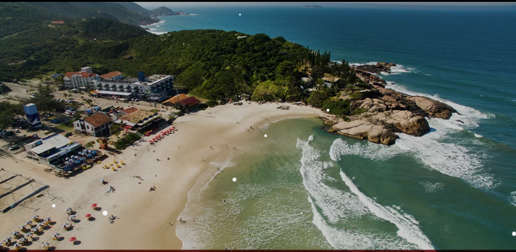
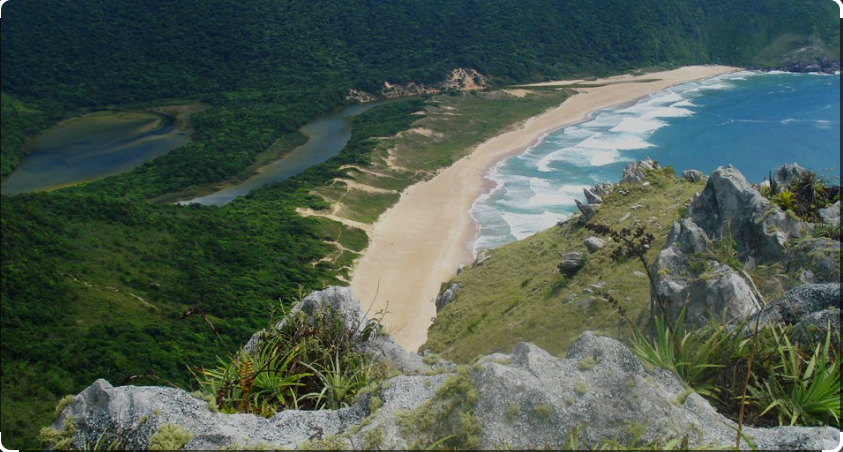
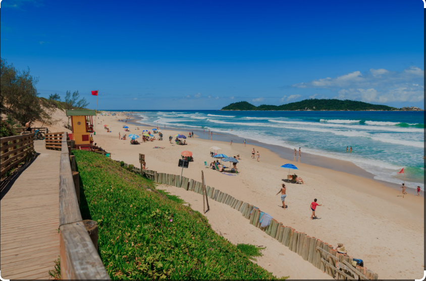

Os lugares de Florianópolis são como jóias espalhadas pela ilha, cada um oferecendo sua própria beleza única
para ser descoberta e apreciada.
Penha - SC
Beto Carreiro
O Beto Carrero World é diversão garantida para toda a família, repleto de aventuras emocionantes e
momentos inesquecíveis."
Sobre
Beto Carrero World é o maior parque temático da América Latina e um dos maiores do mundo,
localizado no município de Penha, no estado de Santa Catarina, Brasil. Fundado em 1991 pelo
empresário e artista Beto Carrero, o parque oferece uma combinação única de atrações,
espetáculos e áreas temáticas que encantam visitantes de todas as idades.
História e Fundação
João Batista Sérgio Murad, mais conhecido como Beto Carrero, foi o visionário por trás do
parque. Antes de fundar o Beto Carrero World, Murad teve uma carreira diversificada,
trabalhando como radialista, publicitário e artista circense. Inspirado por parques temáticos
internacionais, especialmente os da Disney, Murad sonhou em criar um destino similar no
Brasil. Em 28 de dezembro de 1991, esse sonho tornou-se realidade com a inauguração do Beto
Carrero World
Estrutura e Atrações
Beto Carrero World abrange uma área de mais de 14 milhões de metros quadrados e é dividido em
diversas áreas temáticas, cada uma com sua própria identidade e conjunto de atrações. Entre as
áreas mais populares estão:
Avenida das Nações: A entrada principal do parque, onde os visitantes são recebidos por uma
variedade de lojas, restaurantes e serviços.
Ilha dos Piratas: Uma área temática com atrações aquáticas e aventuras inspiradas no mundo dos
piratas. Oeste : Uma recriação de uma cidade do velho oeste americano, completa com
shows ao vivo
e passeios temáticos. Mundo Animal: Um espaço dedicado à vida selvagem, com zoológico e
apresentações com
animais. Aventura Radical: Área que abriga algumas das atrações mais emocionantes do
parque, como
montanhas-russas e brinquedos radicais.
Espetáculos
Além das atrações, Beto Carrero World é famoso por seus espetáculos ao vivo, que incluem shows
de acrobacias, performances com animais e espetáculos temáticos. Entre os mais populares
estão: Excalibur: Um show medieval com cavaleiros, duelos e muita ação. Velozes e Furiosos Show: Uma apresentação de carros e motocicletas em
manobras radicais,
inspirada na famosa franquia de filmes. Madagascar Circus Show: Um espetáculo inspirado nos personagens da franquia
de filmes
Madagascar, produzido em parceria com a DreamWorks Animation.
Impacto e Legado
Desde sua inauguração, Beto Carrero World tem sido um importante motor econômico para a região
de Penha, atraindo milhões de turistas anualmente e gerando milhares de empregos diretos e
indiretos. A visão e o legado de Beto Carrero continuam a viver no parque, que é
constantemente renovado e expandido para oferecer novas experiências aos visitantes.

Florianópolis
Mercado Público
O Mercado Público de Florianópolis: um tesouro gastronômico e cultural no coração da ilha.
Sobre
O Mercado Público de Florianópolis é um dos pontos mais emblemáticos e históricos da capital
catarinense. Localizado no centro da cidade, o mercado é um símbolo da cultura, tradição e
vida
cotidiana dos moradores de Florianópolis. Sua história, arquitetura e o papel que desempenha
na
comunidade fazem dele um lugar indispensável para quem deseja entender e vivenciar a essência
da
cidade.
História e Arquitetura
O Mercado Público de Florianópolis foi inaugurado em 1899, construído para substituir um
antigo
mercado de madeira que já não atendia às necessidades da crescente população da cidade. O
projeto, de estilo colonial, foi elaborado pelo engenheiro alemão Adolfo Konder. A estrutura
original consistia em dois pavilhões paralelos, unidos por um corpo central, formando uma
espécie de “H”. Ao longo dos anos, o mercado passou por várias reformas e ampliações,
incluindo
a construção de um anexo em 1931 e a restauração realizada em 2005, que modernizou suas
instalações, mas preservou sua arquitetura histórica.
Função e Importância Cultural
Desde sua fundação, o Mercado Público tem sido um centro vital de comércio e convivência.
Originalmente, servia como ponto de encontro para pescadores, agricultores e comerciantes que
vendiam seus produtos frescos, como peixes, mariscos, frutas, verduras e carnes. Hoje, embora
mantenha essa função, o mercado também abriga uma grande variedade de lojas e restaurantes que
oferecem produtos típicos da região, artesanato, roupas e artigos diversos.
O mercado é mais do que um local de compras; é um espaço onde a cultura local é vivenciada
diariamente. Os bares e restaurantes são famosos por seus pratos tradicionais, especialmente
os
frutos do mar, e muitos deles se tornaram pontos de encontro populares para os moradores e
turistas. Além disso, o mercado frequentemente sedia eventos culturais, musicais e festivos,
reforçando seu papel como um centro de convivência comunitária.
Modernização e Sustentabilidade
Com o passar dos anos, o Mercado Público de Florianópolis adaptou-se às necessidades modernas,
integrando práticas sustentáveis e melhorando sua infraestrutura para atender melhor ao
público. A restauração de 2005, por exemplo, incluiu a modernização das instalações
sanitárias, elétricas e de acessibilidade, tornando o mercado mais seguro e confortável para
todos os visitantes. Além disso, iniciativas de sustentabilidade, como a gestão adequada de
resíduos e o incentivo ao consumo de produtos locais e orgânicos, foram implementadas para
garantir que o mercado continue a ser um exemplo de preservação ambiental e cultural.
Atração Turística
Para os turistas, o Mercado Público de Florianópolis é uma parada obrigatória. Além de
oferecer uma ampla gama de produtos e gastronomia local, o mercado é um lugar onde os
visitantes podem experimentar a verdadeira hospitalidade catarinense. Guias locais
frequentemente destacam o mercado como um ponto importante em seus roteiros, e a atmosfera
vibrante e acolhedora do local deixa uma impressão duradoura em todos que o visitam.
Lagoa da conceição - SC
Dunas da Joaquina
Um espetáculo de areia e vento que encanta os olhos e alma dos visitantes.
Sobre
As Dunas da Joaquina são um dos pontos turísticos mais icônicos de Florianópolis, Santa
Catarina. Localizadas na costa leste da Ilha de Santa Catarina, as dunas se encontram próximas
à famosa Praia da Joaquina, um destino popular tanto entre os moradores locais quanto entre
turistas nacionais e internacionais.
Formação e Características Naturais
As dunas são formações geológicas criadas pela ação do vento, que transporta e deposita areia
ao longo do tempo. Este processo contínuo resulta em montes de areia que podem atingir alturas
consideráveis, proporcionando uma paisagem única e de grande beleza natural. A areia das Dunas
da Joaquina é fina e clara, destacando-se pelo contraste com o azul do céu e do mar, além da
vegetação circundante.
Atividades e Turismo
As Dunas da Joaquina são conhecidas por oferecer diversas atividades recreativas. Uma das mais
populares é o sandboard, um esporte similar ao snowboard, mas praticado nas dunas. Praticantes
de todas as idades podem alugar pranchas nas proximidades e deslizar pelas encostas arenosas,
aproveitando a adrenalina e a diversão que a atividade proporciona. Além do sandboard, as
dunas também são um excelente local para caminhadas e para quem deseja simplesmente apreciar a
paisagem e tirar fotos..
Importância Ecológica
As dunas desempenham um papel crucial no ecossistema costeiro. Elas atuam como barreiras
naturais contra a erosão, protegendo a costa dos impactos das ondas e das tempestades. Além
disso, as dunas abrigam uma flora e fauna específicas, adaptadas às condições áridas e salinas
do ambiente. Plantas como gramíneas e arbustos desempenham um papel vital na estabilização das
dunas, ajudando a manter a integridade da formação arenosa.
Cultura e História
A região da Joaquina, incluindo suas dunas, tem uma rica história cultural. O nome "Joaquina"
vem de uma antiga lenda local sobre uma benzedeira chamada Joaquina, que viveu na região. A
Praia da Joaquina ganhou fama internacional nos anos 1970 e 1980 como um dos principais pontos
de surfe do Brasil, atraindo surfistas de todo o mundo para suas ondas poderosas e
consistentes.
Conservação e Desafios
Apesar de sua beleza e importância, as Dunas da Joaquina enfrentam desafios relacionados à
conservação. O turismo intenso pode causar danos à vegetação e à estrutura das dunas. Por
isso, há um esforço contínuo por parte das autoridades locais e organizações ambientais para
promover práticas de turismo sustentável e educar os visitantes sobre a importância de
preservar este frágil ecossistema.
Um espaço icônico que respira história e tranquilidade no coração de Florianópolis.
Sobre
A Praça XV de Novembro, localizada no centro de Florianópolis, Santa Catarina, é um dos locais
mais emblemáticos e históricos da cidade. Com uma rica história que remonta ao período
colonial, a praça é um ponto central da vida cultural, social e política de Florianópolis.
História
A história da Praça XV de Novembro começa no século XVIII, quando Florianópolis, então chamada
de Nossa Senhora do Desterro, ainda era uma pequena vila colonial. A área onde hoje se
encontra a praça era originalmente um espaço aberto utilizado para eventos públicos e
atividades cotidianas da população.
Transformações ao Longo dos Séculos
Com o passar dos anos, a praça passou por diversas transformações. No século XIX, foi
oficialmente nomeada Praça XV de Novembro em homenagem à Proclamação da República, ocorrida em
15 de novembro de 1889. Esse período marcou o início de uma série de melhorias urbanas, que
incluíram a pavimentação e a construção de jardins e fontes.
O Figueirense
Um dos marcos mais icônicos da Praça XV de Novembro é a centenária figueira, plantada em 1871.
A figueira é uma atração à parte e se tornou um símbolo da cidade. Com seu tronco imponente e
galhos que se estendem formando uma grande copa, a figueira é um ponto de encontro popular e
um local para fotos, sendo envolta em lendas e tradições locais.
Importância Cultural e Social
A Praça XV de Novembro sempre desempenhou um papel central na vida social e cultural de
Florianópolis. É o palco de diversas celebrações públicas, manifestações culturais e eventos
comunitários. A praça também é cercada por edifícios históricos importantes, como a Catedral
Metropolitana de Florianópolis, cuja construção iniciou-se em 1753, e o Palácio Cruz e Sousa,
que atualmente abriga o Museu Histórico de Santa Catarina.
Espaço de Convivência e Lazer
Hoje, a Praça XV de Novembro é um espaço vibrante que combina a beleza natural com a
importância histórica. Os jardins bem cuidados, as fontes e os bancos fazem da praça um lugar
ideal para lazer e convivência. É comum ver moradores locais e turistas passeando, descansando
à sombra da figueira ou participando de eventos culturais.
Comércio e Gastronomia
A praça também está rodeada por uma variedade de estabelecimentos comerciais e gastronômicos.
Cafés, restaurantes, lojas e bancas de artesanato local tornam a visita à Praça XV de Novembro
uma experiência completa, onde se pode apreciar a cultura e a culinária da região.
O guardião das memórias e da rica história desta ilha encantadora.
Sobre
O Museu Histórico de Santa Catarina, localizado no Palácio Cruz e Sousa, é um dos mais
importantes e emblemáticos museus da cidade de Florianópolis, capital do estado de Santa
Catarina. Situado na Praça XV de Novembro, no coração do centro histórico da cidade, o museu
desempenha um papel crucial na preservação e divulgação da história e cultura catarinense.
História do Palácio Cruz e Sousa
O edifício que abriga o Museu Histórico de Santa Catarina, conhecido como Palácio Cruz e
Sousa, é um marco arquitetônico e histórico. Construído no final do século XVIII, o palácio
foi inicialmente utilizado como residência dos governadores da Capitania de Santa Catarina. Ao
longo dos anos, o prédio passou por diversas reformas e mudanças arquitetônicas, incorporando
elementos do estilo neoclássico, que são visíveis até hoje. O nome do palácio é uma
homenagem ao poeta simbolista catarinense João da Cruz e Sousa, um dos maiores expoentes da
literatura brasileira do século XIX. Em 1984, o edifício foi oficialmente transformado no
Museu Histórico de Santa Catarina, passando a abrigar um vasto acervo de objetos, documentos e
obras de arte que narram a história do estado.
Acervo e Exposições
O acervo do Museu Histórico de Santa Catarina é diversificado e abrangente, composto por
móveis, vestimentas, documentos, fotografias, pinturas e objetos de uso cotidiano que ilustram
diferentes períodos da história de Santa Catarina. Entre os destaques do acervo estão peças do
período colonial, objetos que pertenceram a personalidades importantes da história catarinense
e uma rica coleção de arte sacra.
As exposições permanentes e temporárias do museu são cuidadosamente curadas para oferecer aos
visitantes uma compreensão profunda e envolvente da evolução histórica, social e cultural do
estado. As exposições permanentes abordam temas como a colonização açoriana, a imigração
europeia, a evolução urbana de Florianópolis e a trajetória de Cruz e Sousa.
Atividades Educativas e Culturais
O Museu Histórico de Santa Catarina também é um importante centro de atividades educativas e
culturais. Oferece uma variedade de programas educativos voltados para escolas, universidades
e o público em geral. Essas atividades incluem visitas guiadas, oficinas, palestras e eventos
culturais que buscam promover o conhecimento e a valorização do patrimônio histórico e
cultural de Santa Catarina.
Arquitetura e Ambiente
O Palácio Cruz e Sousa, com sua imponente fachada neoclássica e interiores ricamente
decorados, é uma atração em si. O edifício possui salões ornamentados, escadarias majestosas e
detalhes arquitetônicos que refletem a riqueza cultural e histórica da época em que foi
construído. A visita ao museu proporciona uma imersão não apenas na história contada por seus
objetos, mas também no ambiente histórico preservado do próprio palácio.
Importância para Florianópolis e Santa Catarina
O Museu Histórico de Santa Catarina desempenha um papel vital na preservação da memória
histórica do estado e na promoção da identidade cultural catarinense. Além de ser um ponto
turístico significativo, o museu é um espaço de reflexão sobre o passado e de diálogo sobre o
presente e o futuro da região.
Em suma, o Museu Histórico de Santa Catarina, localizado no Palácio Cruz e Sousa, é uma
instituição essencial para a conservação e disseminação da história de Florianópolis e do
estado de Santa Catarina. Com seu rico acervo, atividades educativas e culturais e um ambiente
arquitetônico único, o museu oferece uma experiência enriquecedora e educativa para todos os
seus visitantes.

Barra da Lagoa - SC
Projeto Tamar
Uma paixão pelo mar, dedicada a proteger e preservar as tartarugas marinhas para as gerações
futuras.
Sobre
O Projeto Tamar é uma das iniciativas mais reconhecidas e bem-sucedidas de conservação marinha
no Brasil, focada principalmente na proteção das tartarugas marinhas. A seguir, apresento um
resumo da história do Projeto Tamar:
Fundação e Objetivos
### Fundação e Objetivos
O Projeto Tamar foi fundado em 1980, resultado de um trabalho conjunto entre o antigo
Instituto Brasileiro de Desenvolvimento Florestal (IBDF) e a Fundação Pró-Tamar. Seu principal
objetivo é proteger e conservar as tartarugas marinhas ameaçadas de extinção que desovam no
litoral brasileiro.
Primeiras Atividades
Nos primeiros anos, o projeto concentrou-se em identificar as principais áreas de desova das
tartarugas marinhas. A equipe inicial, composta principalmente por biólogos e estudantes
voluntários, realizava a patrulha das praias, protegia os ninhos e marcava os animais para
estudos de monitoramento.
Crescimento e Desenvolvimento
Ao longo dos anos 1980 e 1990, o Projeto Tamar expandiu suas atividades, estabelecendo bases
em várias regiões costeiras do Brasil, incluindo estados como Bahia, Espírito Santo, Sergipe,
Pernambuco, Rio Grande do Norte, Ceará e Santa Catarina. Essas bases desempenham um papel
crucial no monitoramento das praias de desova e na proteção dos ninhos e filhotes de
tartarugas.
Educação Ambiental e Comunidade
Desde o início, o Projeto Tamar enfatizou a importância da educação ambiental e do
envolvimento das comunidades locais. Programas educativos foram implementados em escolas e
comunidades costeiras para sensibilizar a população sobre a importância da conservação das
tartarugas marinhas. Além disso, o projeto criou alternativas econômicas sustentáveis para as
comunidades, como o ecoturismo e a produção de artesanato, para reduzir a dependência da pesca
predatória.
Parcerias e Reconhecimento
O Projeto Tamar estabeleceu parcerias com diversas instituições nacionais e internacionais,
incluindo universidades, ONGs e organismos governamentais. Essas parcerias foram essenciais
para o financiamento, pesquisa e implementação de novas tecnologias de conservação.
Resultados e Impacto
Ao longo das décadas, o Projeto Tamar alcançou resultados notáveis na conservação das
tartarugas marinhas. O número de ninhos protegidos e filhotes liberados no mar aumentou
significativamente, contribuindo para a recuperação das populações de tartarugas. Espécies
como a tartaruga-de-pente (Eretmochelys imbricata), a tartaruga-cabeçuda (Caretta caretta), a
tartaruga-oliva (Lepidochelys olivacea) e a tartaruga-verde (Chelonia mydas) têm se
beneficiado das ações do projeto.
Legado e Futuro
O Projeto Tamar tornou-se um modelo de conservação marinha no Brasil e no mundo. Seu sucesso
inspirou outros programas de conservação e demonstrou a importância da integração entre
ciência, educação e envolvimento comunitário. O projeto continua a evoluir, incorporando novas
tecnologias e abordagens para enfrentar os desafios da conservação marinha no século XXI.
As melhores
Praias de Florianópolis
Florianópolis encanta com sua diversidade de praias paradisíacas, trilhas deslumbrantes e uma atmosfera
única que mescla história, cultura e natureza em cada recanto da ilha.

Praia de Jurerê
As praias de Jurerê, com suas areias brancas e águas cristalinas, são um paraíso
tropical que oferece tanto tranquilidade quanto diversão, sendo um destino imperdível para quem
visita Florianópolis.
História de Jurerê
A história da Praia de Jurerê, localizada em Florianópolis, Santa Catarina, é rica e fascinante,
refletindo tanto a evolução geográfica quanto a ocupação humana ao longo dos séculos.
Período Pré-Colonial e Colonial
A região de Jurerê era originalmente habitada por povos indígenas, principalmente os tupis-guaranis.
Esses grupos viviam da pesca, caça e agricultura de subsistência. A chegada dos colonizadores
portugueses no século XVI trouxe mudanças significativas, incluindo a imposição de novas culturas e
a exploração dos recursos naturais.
Século XVIII
Durante o século XVIII, a Ilha de Santa Catarina (onde Jurerê está localizada) começou a se
desenvolver com a fundação de Florianópolis em 1726. No entanto, Jurerê permaneceu relativamente
isolada e com baixa ocupação até o final do século XIX, quando a região começou a ser habitada por
famílias de origem açoriana que vieram para a ilha.
Século XX
No início do século XX, Jurerê era uma pequena comunidade de pescadores e agricultores. A
urbanização e o desenvolvimento econômico da região de Florianópolis ao longo das décadas seguintes
começaram a influenciar Jurerê. Na década de 1980, o governo municipal e estadual começou a investir
em infraestrutura para atrair turismo e desenvolvimento imobiliário.
Desenvolvimento Moderno
O grande marco para Jurerê veio na década de 1990 com a criação do projeto de desenvolvimento urbano
chamado Jurerê Internacional. Idealizado pela Habitasul, o projeto transformou a área em um dos
destinos mais exclusivos e valorizados do Brasil. Jurerê Internacional é caracterizado por suas
mansões luxuosas, condomínios de alto padrão, hotéis de luxo e uma infraestrutura que atrai turistas
de todo o mundo.
Atualidade
Atualmente, a Praia de Jurerê é dividida em duas partes: Jurerê Tradicional e Jurerê Internacional.
Jurerê Tradicional mantém uma atmosfera mais tranquila e residencial, enquanto Jurerê Internacional
é conhecida por suas festas, vida noturna agitada, e um estilo de vida sofisticado. A praia é
frequentada por celebridades e turistas internacionais, consolidando-se como um dos principais
destinos turísticos do Brasil.
Aspectos Culturais e Naturais
Além do desenvolvimento urbano, Jurerê ainda preserva aspectos naturais e culturais. A praia em si é
conhecida por suas águas calmas e claras, ideais para banho e esportes náuticos. A região também
possui trilhas ecológicas, áreas de preservação ambiental e uma rica herança cultural açoriana,
visível em festas, culinária e tradições locais.
A história de Jurerê é um exemplo claro de como a combinação de beleza natural, planejamento urbano
e investimento em infraestrutura pode transformar uma área em um destino turístico de renome
internacional.
Praia da Joaquina
As praias da Joaquina, famosas por suas ondas perfeitas e dunas deslumbrantes, são um verdadeiro
paraíso para os surfistas e amantes da natureza em Florianópolis.
História de Joaquina
A Praia da Joaquina, localizada na ilha de Florianópolis, em Santa Catarina, Brasil, tem uma
história rica que abrange desde lendas indígenas até o desenvolvimento moderno como destino
turístico.
Origens e Lendas Indígenas
Antes da colonização europeia, a região onde está localizada a Praia da Joaquina era habitada pelos
povos indígenas, principalmente os Guaranis. Há lendas que falam de uma mulher chamada Joaquina, que
seria uma índia ou uma bruxa, dependendo da versão da história. Segundo a lenda, ela vivia na praia
e possuía poderes místicos. Essa narrativa folclórica ajudou a nomear a praia e a criar uma aura de
mistério ao redor do local.
Colonização e Desenvolvimento
Com a chegada dos colonizadores portugueses no século XVIII, a região começou a ser explorada e
povoada. No entanto, foi apenas no século XX que a Praia da Joaquina começou a ganhar notoriedade.
Inicialmente, era frequentada por pescadores locais e seus familiares. A pesca era uma atividade
importante e sustentava a economia local.
Surf e Popularidade Internacional
Na década de 1970, a Praia da Joaquina foi descoberta por surfistas devido às suas ondas propícias
para o esporte. A praia rapidamente se tornou um ponto de encontro para surfistas locais e
internacionais, colocando Joaquina no mapa mundial do surf. Em 1975, a praia sediou o primeiro
campeonato de surf oficial de Florianópolis, o que ajudou a consolidar sua reputação.
Turismo e Infraestrutura
Com a fama do surf, a Praia da Joaquina começou a atrair turistas de todas as partes do mundo. Isso
levou ao desenvolvimento de infraestrutura turística na região, incluindo pousadas, restaurantes e
lojas especializadas em artigos de surf. A praia também passou a ser um local popular para eventos
de surf de renome internacional.
Atualidade
Hoje, a Praia da Joaquina é uma das praias mais famosas de Florianópolis, conhecida não apenas pelas
suas excelentes condições para o surf, mas também pelas dunas de areia branca que são usadas para a
prática de sandboard. A praia oferece uma mistura de natureza, esportes e turismo, sendo um dos
principais destinos para quem visita Florianópolis.
Considerações Finais
A história da Praia da Joaquina é um reflexo da transformação de uma região que passou de ser
habitada por indígenas e frequentada por pescadores locais a se tornar um destino internacionalmente
reconhecido. As lendas, a cultura do surf e o desenvolvimento turístico contribuíram para moldar a
identidade dessa praia icônica de Florianópolis.

Lagoinha do Leste
A Lagoinha do Leste, escondida entre montanhas e acessível apenas por trilhas ou barco, é um refúgio
selvagem e
intocado que encanta com sua beleza natural e atmosfera de serenidade.
História da Lagoinha do Leste
A Lagoinha do Leste é uma praia paradisíaca situada na Ilha de Santa Catarina, em Florianópolis,
Brasil.
Conhecida por sua beleza natural e acessibilidade restrita,
a praia é um dos pontos turísticos mais preservados da ilha. A história da Lagoinha do Leste é
marcada por sua
formação geológica, ocupação humana esporádica e preservação ambiental.
Formação Geológica e Nome
A Lagoinha do Leste é assim chamada devido à presença de uma lagoa de água doce que se forma entre a
praia e as
montanhas. A praia está cercada por morros, vegetação densa e Mata Atlântica,
oferecendo uma paisagem exuberante e relativamente intocada.
A formação geológica da região se deu ao longo de milhares de anos, com a ação dos ventos, marés e
chuvas
contribuindo para moldar sua geografia única.
Ocupação Humana
A região de Florianópolis tem uma longa história de ocupação, remontando aos povos indígenas, como
os Carijós,
que habitavam a ilha antes da chegada dos colonizadores europeus. No entanto,
devido ao seu acesso difícil, a Lagoinha do Leste permaneceu relativamente isolada ao longo dos
séculos.
Durante o período colonial, a ilha de Santa Catarina se tornou um importante ponto estratégico e de
colonização,
mas a Lagoinha do Leste continuou a ser uma área pouco explorada devido à sua localização
emota e de difícil acesso. Até hoje, o acesso à praia se dá por trilhas a pé, partindo das praias
vizinhas ou
através de barcos.
Preservação e Turismo
No século XX, com o aumento do turismo em Florianópolis, a Lagoinha do Leste passou a ser descoberta
por
aventureiros e amantes da natureza. A partir das décadas de 1970 e 1980, as trilhas para a
praia começaram a ser mais conhecidas e frequentadas. No entanto, devido ao difícil acesso, a praia
manteve sua
característica de local isolado e preservado.
Em anos mais recentes, a Lagoinha do Leste tem sido foco de esforços de preservação ambiental. A
área é
protegida por leis municipais e estaduais que visam conservar a flora e a fauna locais, bem como a
qualidade das águas da lagoa e da praia. A região é um local de interesse para ecologistas e
biólogos, devido à
sua biodiversidade e ecossistemas relativamente intactos.
Trilhas e Atrações
Existem duas principais trilhas que levam à Lagoinha do Leste: uma que parte do Pântano do Sul e
outra da praia
da Armação. Ambas as trilhas oferecem vistas panorâmicas e a oportunidade de
observar a fauna e flora locais. A praia é um destino popular para caminhadas, camping e para quem
busca um
refúgio tranquilo em meio à natureza.

Praia da Barra da Lagoa
A Praia da Barra da Lagoa, com suas águas calmas e atmosfera acolhedora, é um destino perfeito para
famílias e praticantes de esportes aquáticos,
oferecendo uma mistura encantadora de beleza natural e cultura local.
História da Barra da lagoa
A Barra da Lagoa é um bairro localizado em Florianópolis, na ilha de Santa Catarina, Brasil. A
história da Barra da Lagoa está profundamente ligada à o
cupação da ilha, às atividades de pesca e à cultura açoriana, que influenciou grandemente a
região.
Colonização e Primeiros Habitantes
fA colonização da Ilha de Santa Catarina começou no século XVIII, com a chegada de colonos açorianos
enviados pela Coroa Portuguesa. Esses imigrantes trouxeram consigo tradições, cultura e
conhecimentos técnicos que moldaram a vida na ilha. A Barra da Lagoa, por sua localização
estratégica entre o oceano Atlântico e a Lagoa da Conceição, tornou-se um ponto crucial para a
atividade pesqueira.
Desenvolvimento Econômico
Durante muitos anos, a pesca foi a principal atividade econômica da Barra da Lagoa. Os pescadores
utilizavam técnicas tradicionais, como a pesca de arrastão e a tainha, que ainda hoje é uma
atividade sazonal importante na região. Além da pesca, a agricultura de subsistência também fazia
parte da vida dos moradores.
Turismo e Crescimento Urbano
No século XX, especialmente a partir da segunda metade, a Barra da Lagoa começou a atrair turistas
devido às suas belezas naturais, incluindo praias de areia branca, águas cristalinas e uma rica
biodiversidade marinha. Este influxo de turistas trouxe mudanças significativas ao bairro, com o
desenvolvimento de infraestrutura turística, como pousadas, restaurantes e serviços diversos.
A Barra da Lagoa também é conhecida pelo Canal da Barra, uma passagem natural que conecta a Lagoa da
Conceição ao mar. O canal é um ponto de interesse para turistas e moradores locais, sendo um local
popular para passeios de barco e atividades aquáticas.
Cultura e Tradições
A cultura açoriana ainda é muito presente na Barra da Lagoa. Festividades religiosas, como a festa
do Divino Espírito Santo, e práticas tradicionais, como a renda de bilro e o folclore, são mantidas
vivas pela comunidade. A culinária local, rica em frutos do mar, também reflete essa herança
cultural.
Patrimônio Natural e Ambiental
A região da Barra da Lagoa é rica em biodiversidade e possui áreas de preservação ambiental, como o
Parque Estadual do Rio Vermelho e a área de proteção da Lagoa da Conceição. Esses esforços de
preservação buscam equilibrar o desenvolvimento turístico com a conservação ambiental, garantindo
que as futuras gerações possam desfrutar da natureza exuberante da região.
Praia do Campeche
A Praia do Campeche, com sua vasta extensão de areia branca e ondas vigorosas, é um ponto de
encontro para surfistas e aventureiros,
além de proporcionar vistas deslumbrantes da Ilha do Campeche.
História do Campeche
A Praia do Campeche, localizada no sul da ilha de Florianópolis, Santa Catarina, Brasil, possui uma
rica história que reflete a cultura, as tradições e as transformações da região ao longo do tempo. A
seguir, está um resumo de sua história:
História Antiga
1- Indígenas: Antes da colonização europeia, a região onde hoje está a Praia do
Campeche era habitada por povos indígenas, especialmente os Carijós, um subgrupo dos Tupis-Guaranis.
Eles viviam
da pesca, da coleta de mariscos e da agricultura de subsistência.
Colonização Europeia
2- Século XVI: A colonização europeia começou a impactar a área a partir do século
XVI, com a chegada dos portugueses. A região foi explorada e ocupada de forma esparsa inicialmente,
devido à resistência indígena e à geografia. 3- no Século XVIII: a colonização se intensificou com a chegada de açorianos, que
foram
incentivados pela Coroa Portuguesa a se estabelecer na ilha. Eles trouxeram consigo técnicas de
pesca, agricultura e tradições culturais que ainda são visíveis na região.
Século XX
4- Navegadores e Aviação: O nome "Campeche" é frequentemente associado ao famoso
aviador e escritor
francês Antoine de Saint-Exupéry, autor de "O Pequeno Príncipe". Diz-se que ele pousava seu avião na
praia durante seus voos de correio aéreo na América do Sul, na década de 1920 e 1930. "Campeche"
pode ter origem no nome de uma cidade homônima no México, que o aviador visitou, ou na palavra
francesa "champ", que significa campo. 5- Desenvolvimento e Turismo: Durante o século XX, especialmente a partir da década
de 1970, a Praia do
Campeche começou a se desenvolver como um destino turístico. A beleza natural, com suas dunas,
vegetação nativa e a Ilha do Campeche, atraiu visitantes de várias partes do Brasil e do mundo. A
infraestrutura começou a se desenvolver para atender à demanda turística.
Aspectos Culturais e Naturais
6- Ilha do Campeche: A Ilha do Campeche, localizada em frente à praia, é um
importante sítio
arqueológico e turístico. Possui inscrições rupestres e trilhas que revelam a presença indígena
antiga. A ilha é uma área de preservação, conhecida por suas águas cristalinas e rica biodiversidade
marinha. 7- Preservação Ambiental: Nos últimos anos, a preocupação com a preservação
ambiental tem crescido. A
comunidade local e organizações ambientais trabalham para proteger a flora e fauna nativas, bem como
para manter a qualidade das praias e das águas.

Praia Mole
A Praia Mole, com suas areias fofas e ondas fortes, é um paraíso para surfistas e jovens que buscam
diversão, cercada
por uma exuberante vegetação e uma energia vibrante.
História da Praia Mole
A Praia Mole é uma das praias mais conhecidas e apreciadas de Florianópolis, localizada no litoral
leste da ilha. Sua história está profundamente entrelaçada com a evolução da própria ilha,
refletindo tanto as mudanças naturais quanto as influências humanas ao longo dos anos.
Primeiros Habitantes
Antes da colonização europeia, a região onde hoje se encontra a Praia Mole era habitada por povos
indígenas, principalmente os Tupis-Guaranis. Estes povos viviam da pesca, da caça e da coleta de
frutos do mar, atividades facilitadas pela proximidade com o oceano.
Colonização e Desenvolvimento
Com a chegada dos colonizadores portugueses no século XVIII, a ilha de Santa Catarina começou a ser
mais amplamente ocupada. No entanto, a Praia Mole permaneceu relativamente isolada e preservada
devido à dificuldade de acesso e às dunas que cercam a região.
Década de 1970 e o Boom do Surf
A Praia Mole começou a ganhar popularidade na década de 1970, quando o surf se tornou um esporte
popular no Brasil. Com suas ondas fortes e constantes, a praia atraiu surfistas de todo o país e do
mundo, colocando Florianópolis no mapa como um destino de surfe.
Desenvolvimento Turístico
Nos anos 1980 e 1990, com o crescimento do turismo em Florianópolis, a Praia Mole começou a se
transformar. Foram construídos bares, restaurantes e pousadas nas proximidades, para atender à
crescente demanda dos turistas. A infraestrutura turística melhorou, facilitando o acesso à praia e
tornando-a um ponto de encontro para jovens e praticantes de esportes aquáticos.
Preservação Ambiental
Com o aumento do turismo, surgiram preocupações sobre a preservação ambiental da Praia Mole. A área
é cercada por dunas e vegetação nativa, e esforços têm sido feitos para equilibrar o desenvolvimento
turístico com a preservação do meio ambiente. Programas de conscientização e regulamentações foram
implementados para minimizar os impactos negativos no ecossistema local.
Significado Atual
Atualmente, a Praia Mole é um símbolo da diversidade e da energia vibrante de Florianópolis.
Continua sendo um destino popular para surfistas, além de ser um local ideal para relaxar e apreciar
a beleza natural da ilha. As discussões sobre o desenvolvimento sustentável e a preservação
ambiental continuam, refletindo a importância de manter esse paraíso natural para as futuras
gerações.
Em resumo, a história da Praia Mole é um reflexo da transformação de Florianópolis de uma área
relativamente isolada para um destino turístico de renome mundial, sempre com um olhar atento à
preservação ambiental e à valorização de sua cultura local.
Praia dos Ingleses
A Praia dos Ingleses, com suas águas claras e infraestrutura acolhedora, é um destino popular em
Florianópolis que combina
lazer, beleza natural e a rica cultura açoriana.
Resumo da Praia dos Ingleses
Praia dos Ingleses é uma das mais famosas e visitadas praias de Florianópolis, a capital do estado
de Santa Catarina, Brasil. A história dessa praia é rica e está intimamente ligada à colonização e
ao desenvolvimento da região.
Origens e Colonização
A história da Praia dos Ingleses remonta ao século XVIII, quando um navio inglês naufragou na costa
da ilha de Santa Catarina. Este evento marcou o início do nome "Ingleses", pois os marinheiros
ingleses foram resgatados e estabelecidos na área, contribuindo para a formação da comunidade
local.
A colonização europeia na região foi intensificada com a chegada de açorianos, que se estabeleceram
na ilha e influenciaram significativamente a cultura, arquitetura e culinária locais. Esses colonos
trouxeram suas tradições, que se misturaram com as influências deixadas pelos marinheiros
ingleses.
Desenvolvimento e Turismo
No início do século XX, Praia dos Ingleses era uma área relativamente isolada e de difícil acesso.
No entanto, com o passar dos anos, a infraestrutura foi se desenvolvendo, e a praia começou a atrair
mais visitantes. O desenvolvimento de estradas e a melhoria dos transportes facilitaram o acesso,
transformando Ingleses em um destino popular para turistas.
A partir da década de 1970, com o crescimento do turismo em Florianópolis, a Praia dos Ingleses
experimentou um boom no desenvolvimento imobiliário. Hotéis, pousadas e outros estabelecimentos
comerciais começaram a surgir, atraindo tanto turistas nacionais quanto internacionais. Esse
crescimento trouxe melhorias na infraestrutura, como a construção de novas vias de acesso e serviços
públicos.
Características e Atrações
Hoje, Praia dos Ingleses é conhecida por suas extensas faixas de areia branca e fina, águas azuis e
clima ameno. É um local muito procurado tanto para atividades de lazer quanto para esportes
aquáticos, como surfe e kitesurf.
A comunidade local ainda preserva muitas tradições açorianas, visíveis em festas, culinária e
arquitetura. Além disso, a praia é cercada por dunas, que são uma atração natural à parte,
oferecendo trilhas e belas paisagens.
Desafios Atuais
Com o aumento do turismo e do desenvolvimento urbano, a Praia dos Ingleses também enfrenta desafios,
como a necessidade de preservação ambiental e a gestão do crescimento urbano sustentável. A pressão
sobre os recursos naturais e a infraestrutura exige um equilíbrio cuidadoso entre desenvolvimento e
conservação.
Praia da Daniela
A Praia da Daniela, com suas águas calmas e ambiente tranquilo, é um refúgio perfeito para famílias
e aqueles que buscam relaxar em meio à beleza serena de Florianópolis.
Resumo da Praia da Daniela
A Praia da Daniela, localizada no norte da Ilha de Santa Catarina, em Florianópolis, Santa Catarina,
Brasil, é conhecida por sua beleza natural e águas calmas. A história desta praia está intimamente
ligada ao desenvolvimento da região norte da ilha, que sofreu um processo de urbanização e valorização
turística nas últimas décadas.
Origens e Desenvolvimento
A Praia da Daniela, também conhecida apenas como Daniela, começou a se destacar a partir dos anos 1970
e 1980, quando Florianópolis começou a se expandir como destino turístico. Inicialmente, a área era
composta por terrenos de restinga e vegetação nativa, com pouca infraestrutura e população
esparsa.
Características Naturais
Uma das principais atrações da Praia da Daniela é sua tranquilidade e a beleza natural. As águas
calmas da praia são ideais para famílias com crianças, e a preservação de áreas de restinga e
manguezais ao redor contribui para a biodiversidade local. A praia é cercada por vegetação típica da
Mata Atlântica, o que proporciona um ambiente agradável e paisagens cênicas.
Turismo e Economia
O turismo desempenha um papel crucial na economia local, especialmente durante a alta temporada de
verão. Além das atividades de praia, a região oferece opções de esportes aquáticos, trilhas ecológicas
e uma série de eventos culturais que atraem visitantes.
Preservação Ambiental
Nos últimos anos, houve um aumento na conscientização sobre a importância de preservar os ecossistemas
locais. Iniciativas de preservação ambiental e programas de educação sobre a importância das dunas,
manguezais e vegetação nativa têm sido promovidos para garantir que o desenvolvimento urbano não
comprometa a biodiversidade e a beleza natural da Praia da Daniela.
Desafios Atuais
Como muitas áreas em desenvolvimento, a Praia da Daniela enfrenta desafios relacionados ao crescimento
sustentável e à preservação ambiental. A pressão imobiliária e a necessidade de infraestrutura
adequada para suportar o aumento populacional são questões contínuas que a comunidade e as autoridades
locais precisam gerenciar cuidadosamente.
A história da Praia da Daniela reflete uma combinação de desenvolvimento urbano e esforço de
preservação ambiental, resultando em um destino que oferece tranquilidade, beleza natural e uma
comunidade acolhedora.